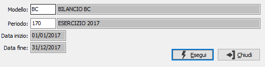

Generazione voci di bilancio
La procedura integra e completa la fase di Generazione valori e consente l'associazione delle voci di riclassificazione, di un modello specifico, ai valori calcolati dalla suddetta procedura creando la base dati per la stampa del bilancio e le altre analisi presenti nel modulo Analisi di bilancio.

MODELLO: inserire il modello da utilizzare per la generazione; il modello indica alla procedura le voci da elaborare. Sul campo sono attive le funzioni di ricerca (F9) sulla tabella stessa.
PERIODO: inserire il periodo per cui si desidera effettuare la generazione delle voci; il periodo indica alla procedura i valori da elaborare. L'inserimento del periodo determina la valorizzazione delle date di elaborazione. Sul campo sono attive le funzioni di ricerca (F9) sulla tabella stessa.